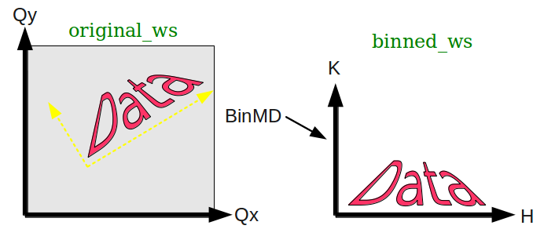
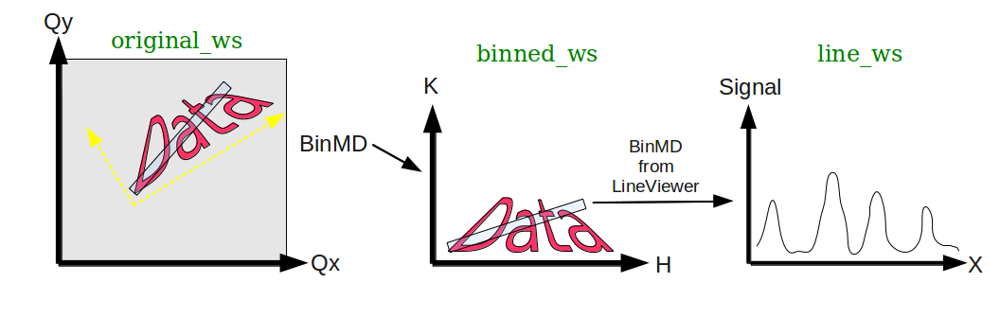

BinMD Coordinate Transformations#
Introduction#
The algorithms BinMD v1 and SliceMD v1 allow an MD Workspace to be binned into a new coordinate system. This guide describes the coordinate transformations and relations between binned workspaces.
Binning an MDWorkspace#
Begin with an initial MD Workspace called
original_wswith two dimensions,QxandQy.The BinMD v1 algorithm can transform these coordinates into a new coordinate space with, for example, a rotation and a translation:

The output MD Histogram Workspace, called
binned_wsstill has two dimensions, now calledHandK.The
binned_wsworkspace holds a reference to the original workspace.This can be seen in the details of the workspace in the Workspaces widget (
Binned from 'original_ws').In C++, calling
binned_ws->getOriginalWorkspace(0)will return a pointer tooriginal_ws.
It also holds the coordinate transformations between workspaces:
(H, K) -> (Qx, Qy): Binned coordinates back to original coordinates.In C++, this can be accessed via
binned_ws->getTransformToOriginal(0)
(Qx, Qy) -> (H, K): original coordinates to the binned coordinates.In C++, this is accessible via
binned_ws->getTransformFromOriginal(0)
When moving the mouse in the Sliceviewer, for example, the coordinates in BOTH spaces will be displayed.
Binning a Line From an MDHistoWorkspace#
It is possible to call BinMD v1 on an MD Histogram Workspace that has already been binned.
For example, if you are viewing binned_ws in the Sliceviewer, you can use the
Non-axis aligned cutting tool to bin a line from that.

Say you bin
binned_wsto a line with a width:line_ws.The
line_wsworkspace has 2 dimensions (since it has a width).The dimensions of
line_wshave the generic names:(X,Y).Only the
Xdimension has more than one bin, but theYdimension still exists.Each point in
(X,Y)space has an equivalent in(H,K)and in(Qx,Qy)space.
The integration will actually be performed on the event data in the
original_ws.There are then two ‘original’ workspaces recorded in ‘line_ws’:
line_ws->getOriginalWorkspace(0)returns theoriginal_ws(the event data).line_ws->getTransformToOriginal(0)returns the(X,Y) -> (Qx,Qy)transform.line_ws->getTransformFromOriginal(0)returns the(Qx,Qy) -> (X,Y)transform.
line_ws->getOriginalWorkspace(1)returns the intermediate workspacebinned_ws(the 2D histogram data).line_ws->getTransformToOriginal(1)returns the(X,Y) -> (H,K)transform.line_ws->getTransformFromOriginal(1)returns the(H,K) -> (X,Y)transform.
When using the
Plot MDmenu on theline_ws, you can display the plot as the coordinates of the intermediate workspace.In this example, this would be the
(H,K)coordinates.
Category: Techniques